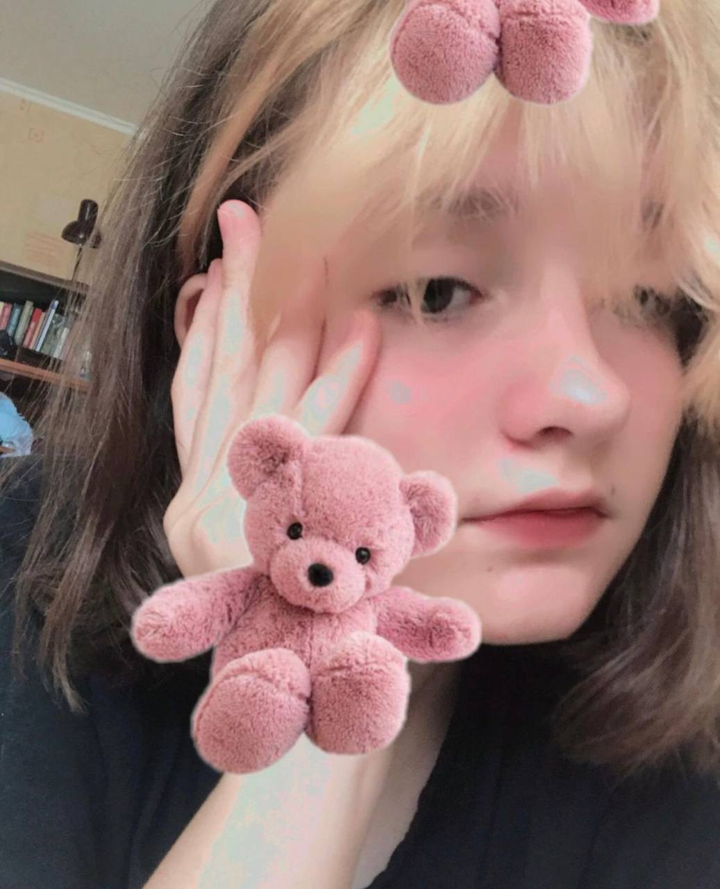

Елизавета Уродина
Краткая информация:
- Фото: 
- ФИО: Педрочкова Елизавета Уродинская
- Псевдоним: Масиро, Уродина, Масиролол
- Дата рождения: 26.06.2009
- Рост: 1,3м
- Номер телефона: показать
- Адрес электронной почты: (показать)
- Адрес проживания: (показать)
- Род деятельности: моральная поддержка, размышляет о дизайнерстве
- Ориентация: немировская
Детство
Елизавета Педрочкова родилась 26 июня 2009 года в городе Винница, Украина. С детства отличалась способностью сдерживать свои таланты. В 7 лет она впервые попробовала рисование, и у неё даже что-то получалось. Но в один момент, ей в голову пришла мысль, которая оставила непоправимый отпечаток на всю оставшуюся жизнь: «А ЗАЧЕМ ВООБЩЕ ЧТО-ТО ДЕЛАТЬ». И с того самого момента она начала сдерживать не только свои творческие потуги и таланты, но и рост, и интеллект. Единственное, что она не смогла сдержать – это тяга к общению с людьми(все верстальщики отмечают её «харизматичность» и «высокий интеллект»).
Школьные годы
В школьные годы Лиза познакомилась и подружилась с Анастасией Враждебной и Соней. За счёт Насти безуспешно пыталась поднять свой интеллект. В школе у нее хорошие оценки, но она ещё не знает то, что списывать с ГДЗ - это не то же самое, что хорошо учиться. Вскоре, она решила зайти в ДайВинчик и найти себе друга, а в итоге нашла себе парня – Илью Немировского(все верстальщики отмечают его адекватность, скромность и спокойность). С ним она целуется и делает вид, что любит, а на деле ждёт, когда он даст «почилить» у него на хате и посмотреть аниме, и когда же он ей наконец-то купит очередной Brawl-Pass и пиццу. В общем не отношения, а сказка.
Настоящее время
Как говорят Верстальщики Говна, цитирую: «У Масиро полный капец-пипец в отношениях с Ильёй, что там чёрт ногу сломит, а точнее сломал, но не чёрт, а Илья, пока носил Масиро». С подружками у неё всё хорошо: всё сообщества Верстальщиков Говна она превратила в своих ЛП. Также она успешно ничего не добивается, а просто курит сигареты совместно с Настей. За всю жизнь у неё трагически погибло 4 хомяка. Но мы, Верстальщики Говна, с радостью приняли её в свой состав, и как отмечает сама Лиза, цитирую: «Я благодарна всем верстальщикам, которые так меня поддерживали. После вступления в это сообщество моя жизнь стремительно и уверенно движется в худшую сторону».
Итог: если у вас в жизни творится полный пиздец, не начинайте сдерживать свои таланты. Лучше – вступите в Верстальщики Говна, мы вам обязательно поможем.
Итог: если у вас в жизни творится полный пиздец, не начинайте сдерживать свои таланты. Лучше – вступите в Верстальщики Говна, мы вам обязательно поможем.